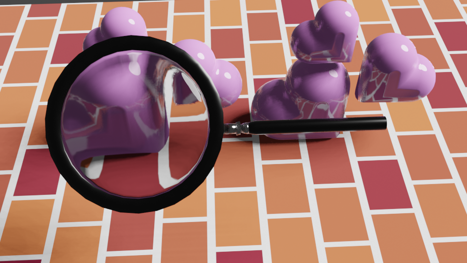

Blender Render 3d
Los modelos tridimensionales se realizaron mediante el software de blender
Faro de Noche
En este modelado 3d se represento del mar con un barco acercandose a un faro en una noche estrellada

Render 3d
En este modelado se busco la representación de cuando vemos un objeto a traves de una lupa aumentando el tamaño del objeto a traves del cristal
